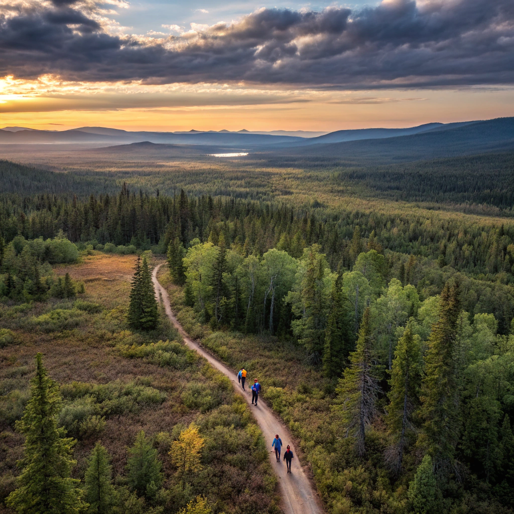

Doğaya Saygılı Kamp ve Yürüyüş Rehberi: Ayak İzinizden Başka Bir Şey Bırakmayın
24 Temmuz 2025
Doğayla iç içe geçireceğiniz zamanlar, ruhunuzu beslerken aynı zamanda bu güzellikleri koruma sorumluluğunu da beraberinde getirir. "Ayak izinizden başka bir şey bırakmayın" felsefesiyle hazırladığımız bu rehber, doğa sporları tutkunlarının ekosisteme zarar vermeden keyifli vakit geçirebilmeleri için temel prensipleri içeriyor.
Dünya Doğayı Koruma Vakfı (WWF) verilerine göre, doğa turizmi sırasında yapılan bilinçsiz davranışlar, her yıl 1 milyon hektardan fazla doğal alanın bozulmasına neden oluyor.


Doğada Sorumluluk Sahibi Olmanın 7 Altın Kuralı
Doğa sporlarının temel etik kurallarını oluşturan "Leave No Trace" (Hiçbir İz Bırakma) prensipleri:
Önceden Planlayın ve Hazırlanın
Hava durumunu, bölgenin özelliklerini ve olası tehlikeleri öğrenin. Böylece gereksiz ekipman taşımaz ve doğaya daha az zarar verirsiniz.
Dayanıklı Yüzeylerde Seyahat Edin ve Kamp Kurun
Var olan patika ve kamp alanlarını kullanın. Çiğnenmemiş alanlara girmek bitki örtüsüne zarar verir.
Atıklarınızı Uygun Şekilde Bertaraf Edin
Çöplerinizi toplayıp geri götürün. Organik atıklar bile doğada uzun süre kalabilir ve yaban hayatını etkileyebilir.
Bulduğunuz Gibi Bırakın
Taş, bitki, tarihi eser gibi doğal ve kültürel objeleri olduğu yerde bırakın. Anı olarak sadece fotoğraf çekin.
Kamp Ateşinin Etkisini En Aza İndirin
Mümkünse kamp ocağı kullanın. Ateş yakacaksanız var olan ateş çukurlarını kullanın ve tamamen söndürdüğünüzden emin olun.
Yaban Hayatına Saygı Gösterin
Hayvanları uzaktan izleyin, beslemeyin ve rahatsız etmeyin. Yiyeceklerinizi güvenli şekilde saklayın.
Diğer Ziyaretçileri Düşünün
Doğada sessizliği koruyun, yüksek sesli müzik çalmayın. Başkalarının doğa deneyimine saygı gösterin.
Eksiksiz ve Çevre Dostu Kamp Çantası Checklist
Doğaya minimum etki bırakmak için ihtiyacınız olan temel ekipmanlar:

Türkiye'nin En Güzel ve Hassas Doğa Alanları
Bu özel bölgeleri ziyaret ederken ekstra özen göstermelisiniz:
Kaçkar Dağları (Rize)
Alpin çayırları ve endemik bitkileriyle dünyanın önemli biyolojik çeşitlilik noktalarından. Kamp ateşi kesinlikle yasak.
Göreme Milli Parkı (Nevşehir)
Peri bacalarının hassas yapısını korumak için belirlenen yollar dışına çıkmayın.
Datça Yarımadası (Muğla)
Akdeniz foklarının yaşam alanı. Sahil şeridinde kamp yaparken sessiz olun.
Sultan Sazlığı (Kayseri)
300'den fazla kuş türüne ev sahipliği yapan bu sulak alanda yürüyüş parkurlarını aşmayın.
Doğa Yürüyüşlerinde Dikkat Edilecekler
Yürüyüş sırasında doğaya minimum etki bırakmak için:
- Patikalardan ayrılmayın - bitki örtüsüne zarar vermeyin
- Tek sıra yürüyün - patikanın genişlemesine neden olmayın
- Taş ve kütükleri yerinden oynatmayın - mikro habitatları bozmayın
- Yüksek sesle konuşmayın ve müzik çalmayın - yaban hayatını rahatsız etmeyin
- Dik yamaçlarda kestirme yollar açmaya çalışmayın - erozyona neden olabilirsiniz

Doğayla iç içe geçirdiğimiz her an, aslında onun bir parçası olduğumuzu hatırlatır bize. Bu güzellikleri korumak ve gelecek nesillere aktarmak ise hepimizin ortak sorumluluğu. Unutmayın, doğaya saygılı bir kampçı veya yürüyüşçü olmak, sadece kurallara uymak değil, aynı zamanda bir yaşam felsefesini benimsemektir. Bir sonraki maceranızda bu prensipleri uygulayarak doğanın kalbinde ama onun bir misafiri olarak var olabilirsiniz.